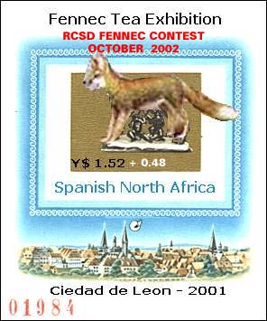

|
FIRST FENNEC COMPETITION
In October 2002 the well known stamp
collecting activist and one of the SNA founders, Mr. Tracy Barber
from USA has launched a Fennec Competition. We publish below the rules and
the results, and we congratulate as much the promoter as the winners.
======================
Question 1 for 250 stamps:
======================
Somewhere, in the United States, one will find fennecs. Can you name a
state where fennecs can be found? Follow-up: Why would one find fennecs
there?
Rule: You have to give a reason for the state.
Clue: Smaller, city zoos will not be accepted.
==========================
Question 2 for 250 stamps:
==========================
Within this state, where do the fennecs live? There is a specific area one
can find them. Give the official name of the place.
Rule: Official name only
Clue: Walmart Map
==========================
Question 3 for 500 stamps:
==========================
In referencing this material, there seems to be other critters that live
there as well. The beginning letters of 4 of these animals are in the
clue. Name them.
Rule: First letter given below - name all 4.
Clue: M, O, V, T

...and the winners are... drum roll ...
Question 1: Shell,
dowedy@sbcglobal.net, 250 stamps
Question 2: Jon Nailor,
arcrtic_wolf45@hotmail.com, 250
stamps
Question 3: Tom Lair,
tlair@ix.netcom.com, 500 stamps
Answer:
There are fennecs, vultures, Arabian Oryx, tortoises and meerkats
amongst the 132 different critter species at the Living Desert (Palm
Desert) in California.
On October 30, 2002 the SNAPO has overprinted
the Fennec Tea Exhibition sheet, as seen above. The print run is of
only one sheet, because only two could be fond in the SNA Postal
Museum, all others being sold a long time ago. Therefore please
don't send orders for this issue, it's totally uselessly. The sheet
can be permanently admired in the SNA Postal Museum. |